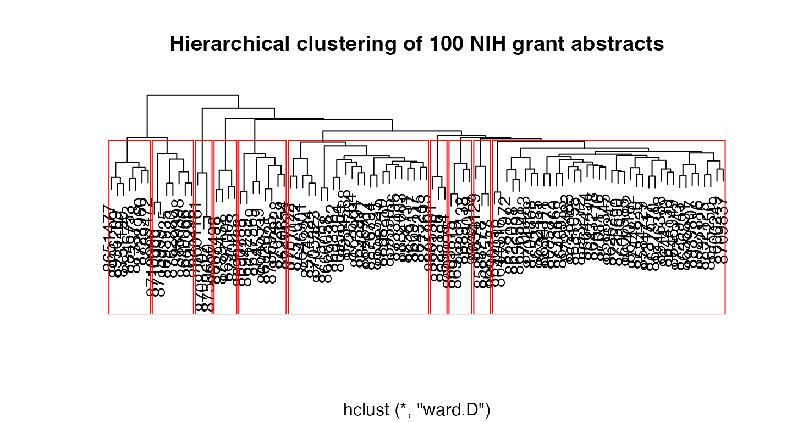

2. document clustering
Thomas W. Jones
2019-11-16
b_document_clustering.RmdDocument clustering
A common task in text mining is document clustering. There are other ways to cluster documents. However, for this vignette, we will stick with the basics. The example below shows the most common method, using TF-IDF and cosine distance.
Let’s read in some data and make a document term matrix (DTM) and get started.
library(textmineR)
#> Loading required package: Matrix
#>
#> Attaching package: 'textmineR'
#> The following object is masked from 'package:Matrix':
#>
#> update
#> The following object is masked from 'package:stats':
#>
#> update
# load nih_sample data set from textmineR
data(nih_sample)
# create a document term matrix
dtm <- CreateDtm(doc_vec = nih_sample$ABSTRACT_TEXT, # character vector of documents
doc_names = nih_sample$APPLICATION_ID, # document names
ngram_window = c(1, 2), # minimum and maximum n-gram length
stopword_vec = c(stopwords::stopwords("en"), # stopwords from tm
stopwords::stopwords(source = "smart")), # this is the default value
lower = TRUE, # lowercase - this is the default value
remove_punctuation = TRUE, # punctuation - this is the default
remove_numbers = TRUE, # numbers - this is the default
verbose = FALSE, # Turn off status bar for this demo
cpus = 2) # default is all available cpus on the system
# construct the matrix of term counts to get the IDF vector
tf_mat <- TermDocFreq(dtm)First, we must re-weight the word counts in the document term matrix. We do this by multiplying the term frequency (in this case, count of words in documents) by an inverse document frequency (IDF) vector. textmineR calculates IDF for the \(i\)-th word as
\[\begin{align} IDF_i = ln\big(\frac{N}{\sum_{j = 1}^N C(word_i, doc_j)}\big) \end{align}\]
where \(N\) is the number of documents in the corpus.
By default, when you multiply a matrix with a vector, R multiplies the vector to each column. For this reason, we need to transpose the DTM before multiplying the IDF vector. Then we transpose it back to the original orientation.
The next step is to calculate cosine similarity and change it to a distance. We’re going to use some linear algebra to do this. The dot product of two positive-valued, unit-length vectors is the cosine similarity between the two vectors. For a deeper explanation of the math and logic, read this article.
R’s various clustering functions work with distances, not similarities. We convert cosine similarity to cosine distance by subtracting it from \(1\). This works because cosine similarity is bound between \(0\) and \(1\). While we are at it, we’ll convert the matrix to a dist object.
The last step is clustering. There are many clustering algorithms out there. My preference is agglomerative hierarchical clustering using Ward’s method as the merge rule. Compared to other methods, such as k-means, hierarchical clustering is computationally inexpensive.
In the example below, I choose to cut the tree at \(10\) clusters. This is a somewhat arbitrary choice. I often prefer to use the silhouette coefficient. You can read about this method here. Performing this is an exercise I’ll leave to the reader.
hc <- hclust(cdist, "ward.D")
clustering <- cutree(hc, 10)
plot(hc, main = "Hierarchical clustering of 100 NIH grant abstracts",
ylab = "", xlab = "", yaxt = "n")
rect.hclust(hc, 10, border = "red")
It might be nice to get an idea of what’s in each of these clusters. We can use the probability difference method from above.
p_words <- colSums(dtm) / sum(dtm)
cluster_words <- lapply(unique(clustering), function(x){
rows <- dtm[ clustering == x , ]
# for memory's sake, drop all words that don't appear in the cluster
rows <- rows[ , colSums(rows) > 0 ]
colSums(rows) / sum(rows) - p_words[ colnames(rows) ]
})The code chunk below creates a summary table of clusters. Each cluster’s size and the top 5 words are represented.
# create a summary table of the top 5 words defining each cluster
cluster_summary <- data.frame(cluster = unique(clustering),
size = as.numeric(table(clustering)),
top_words = sapply(cluster_words, function(d){
paste(
names(d)[ order(d, decreasing = TRUE) ][ 1:5 ],
collapse = ", ")
}),
stringsAsFactors = FALSE)| cluster | size | top_words |
|---|---|---|
| 1 | 23 | risk, health, diabetes, intervention, treatment |
| 2 | 4 | hiv, inflammation, env, testing, study |
| 3 | 38 | cell, infection, determine, cells, function |
| 4 | 7 | research, program, cancer, disparities, students |
| 5 | 8 | cancer, brain, imaging, tumor, metastatic |
| 6 | 3 | microbiome, crc, gut, psoriasis, gut_microbiome |
| 7 | 3 | cdk, nmdar, nmdars, calpain, tefb |
| 8 | 7 | research, core, center, support, translational |
| 9 | 3 | lung, ipf, expression, cells, methylation |
| 10 | 4 | mitochondrial, metabolic, redox, ros, bde |
You may want a word cloud to visualize each cluster. Using the wordcloud package, we plot cluster 100 below.
# plot a word cloud of one cluster as an example
wordcloud::wordcloud(words = names(cluster_words[[ 5 ]]),
freq = cluster_words[[ 5 ]],
max.words = 50,
random.order = FALSE,
colors = c("red", "yellow", "blue"),
main = "Top words in cluster 100")